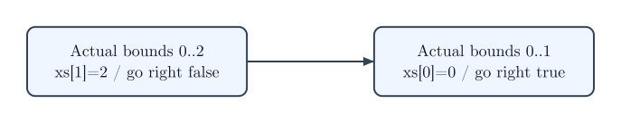
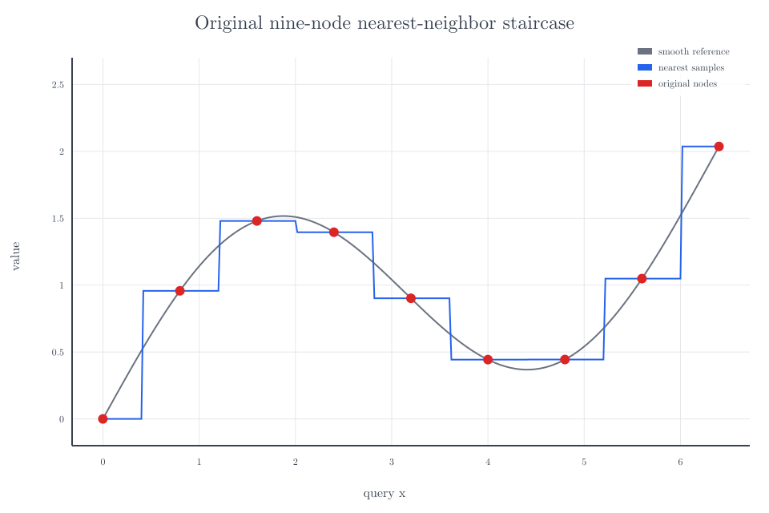
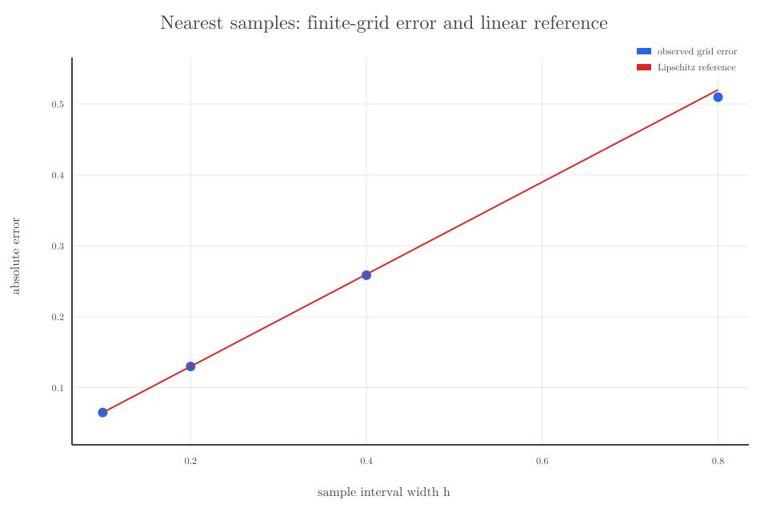
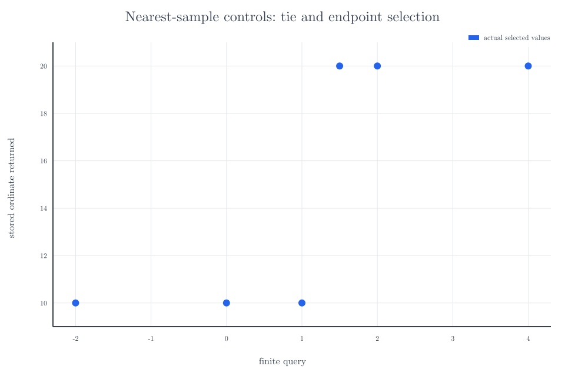

Nearest-neighbor interpolation
Abstract
Estimate a sampled function at a new coordinate by returning the ordinate of its nearest sample. This preserves existing values without inventing averages, at the cost of jumps between sample regions. We inspect actual binary-search decisions, retain the original nine-node smooth-function example, and check a Lipschitz error reference using a prepared native model with complete input validation.
Nearest samples define one-dimensional cells
For strictly ordered nodes x0 through x[n−1], each neighboring pair shares its midpoint as a decision boundary. The lower index owns an exact distance tie. Outside the sample range, the nearest endpoint is selected. This produces a piecewise-constant function that reproduces all nodes exactly and returns only stored ordinates. Numeric values can encode categories, but averaging or smoothing is absent. Discontinuities can be undesirable for a smooth signal; the method is not universally artifact-free or fastest on every workload.
The producer first tests the two endpoints, then binary-searches the first node not below an interior query and compares its distance with the preceding node's distance. Every iteration shrinks the inclusive search interval, giving logarithmic search work. The prepared model validates and owns the complete nodes once. The one-query convenience function performs that validation/setup on every call, so its full cost is linear in node count rather than just its search cost.
Three samples and a hand-checkable tie
For nodes0,2,5 and ordinates10,20,30, query1 is equally far from0 and2 and chooses the lower sample. The diagram and table use actual inclusive bounds and midpoint comparisons from the canonical producer. The widened final distances are recorded separately; the report does not replay binary search.
#include <dm/dm.hpp>
int main() {
std::filesystem::create_directories("build");
dm::algorithms::NearestNeighborInterpolant model({0, 2, 5}, {10, 20, 30});
auto t = model.trace(1);
dm::graphics::Diagram d;
std::print("| actual lo | actual hi | actual mid | compared abscissa | go right |\n| ---: | ---: | ---: " "| ---: | --- |\n");
for (std::size_t k = 0; k < t.steps.size(); ++k) {
auto &s = t.steps[k];
std::print("| {} | {} | {} | {} | {} |\n", s.lo, s.hi, s.mid,
s.abscissa, s.go_right);
auto id = std::to_string(k);
d.node(id, {6.0 * k, 0},
std::format("Actual bounds {}..{}\nxs[{}]={} / go right {}",
s.lo, s.hi, s.mid, s.abscissa, s.go_right));
if (k)
d.edge(std::to_string(k - 1), id);
}
std::print("\nActual distances: {} and {}. Selected sample: {}, value: {}.\n",
t.left_distance, t.right_distance, t.selected, t.value);
d.save_svg("build/nearest_tiny.svg");
}| actual lo | actual hi | actual mid | compared abscissa | go right |
|---|---|---|---|---|
| 0 | 2 | 1 | 2 | false |
| 0 | 1 | 0 | 0 | true |
Actual distances: 1 and 1. Selected sample: 0, value: 10.

Retain the original smooth-function samples
The original function is sin(x)+0.3x, sampled at0,0.8,...,6.4. The original queries1.4 and1.0 choose the nodes1.6 and0.8 respectively. The native study generates the same coarse samples and a321-point grid with spacing0.02 over the same domain. Integer-generated query coordinates avoid accumulated loop-step drift.
A line through dense nearest-neighbor values approximates the staircase visually; each steep connector is a drawing between neighboring grid evaluations, not an interpolated transition supplied by the model. The table verifies exact node reproduction. The smooth reference is retained to show the lost intermediate values rather than to claim the staircase reconstructs the unknown function exactly.
#include <dm/dm.hpp>
int main() {
std::filesystem::create_directories("build");
auto s = dm::algorithms::nearest_neighbor_demo_study();
dm::algorithms::NearestNeighborInterpolant model(s.samples.xs, s.samples.ys);
std::print("| original node | actual stored value | native query at node |\n| ---: | ---: | ---: |\n");
for (std::size_t i = 0; i < s.samples.xs.size(); ++i)
std::print("| {} | {} | {} |\n", s.samples.xs[i], s.samples.ys[i],
model.evaluate(s.samples.xs[i]));
std::print("\nOriginal query1.4: {}. Query1.0: {}.\n", model.evaluate(1.4),
model.evaluate(1.0));
auto p = dm::graphics::RPlot::create();
p.line(s.queries, s.truth, "smooth reference", {107, 114, 128}, 2).line(
s.queries, s.values, "nearest samples", {37, 99, 235}, 2).points(
s.samples.xs, s.samples.ys, "original nodes", {220, 38, 38}, 6).y_limits(-.2, 2.7).title("Original nine-node nearest-neighbor staircase").x_label("query x").y_label("value").save_svg("build/nearest_original.svg");
}| original node | actual stored value | native query at node |
|---|---|---|
| 0 | 0 | 0 |
| 0.8 | 0.9573560908995228 | 0.9573560908995228 |
| 1.6 | 1.479573603041505 | 1.479573603041505 |
| 2.4000000000000004 | 1.3954631805511508 | 1.3954631805511508 |
| 3.2 | 0.9016258565724199 | 0.9016258565724199 |
| 4 | 0.44319750469207175 | 0.44319750469207175 |
| 4.800000000000001 | 0.4438353911641596 | 0.4438353911641596 |
| 5.6000000000000005 | 1.0487333621276793 | 1.0487333621276793 |
| 6.4 | 2.0365492048504934 | 2.0365492048504934 |
Original query1.4: 1.479573603041505. Query1.0: 0.9573560908995228.

Derive and check an error reference
If the underlying function is L-Lipschitz, its value changes by at most L times coordinate distance. Inside a covered interval of width h, the nearest node is at distance at most h/2. Thus absolute interpolation error is at most Lh/2 in exact arithmetic. For sin(x)+0.3x, the derivative is cos(x)+0.3 with absolute value at most1.3, so the uniform-grid reference is1.3h/2. This bound applies inside the covered domain, not arbitrary extrapolation or floating roundoff.
The next native studies refine the same domain with9,17,33 and65 nodes. Each table row reports the actual maximum only on its fixed finite query grid. Agreement supports the finite experiment; the Lipschitz argument supplies the domain-wide exact-arithmetic statement.
#include <dm/dm.hpp>
int main() {
std::filesystem::create_directories("build");
std::vector<double> x, error, bound;
std::print("| sample nodes | native maximum finite-grid error | Lipschitz reference |\n| ---: | ---: | " "---: |\n");
for (std::size_t n : {9U, 17U, 33U, 65U}) {
auto s = dm::algorithms::nearest_neighbor_demo_study(n, 1280);
x.push_back(6.4 / (n - 1));
error.push_back(s.max_grid_error);
bound.push_back(s.error_reference);
std::print("| {} | {} | {} |\n", n, s.max_grid_error, s.error_reference);
}
auto p = dm::graphics::RPlot::create();
p.points(x, error, "observed grid error", {37, 99, 235}, 6).line(
x, bound, "Lipschitz reference", {220, 38, 38}, 2).title(
"Nearest samples: finite-grid error and linear reference").x_label(
"sample interval width h").y_label("absolute error").save_svg(
"build/nearest_error.svg");
}| sample nodes | native maximum finite-grid error | Lipschitz reference |
|---|---|---|
| 9 | 0.5096603789332381 | 0.52 |
| 17 | 0.2586693307950612 | 0.26 |
| 33 | 0.12990330330184618 | 0.13 |
| 65 | 0.06497916927067833 | 0.065 |

Endpoint, singleton and empty controls
The prepared API requires equal-size finite arrays and strictly increasing abscissae. Singleton input always returns its one ordinate for a finite query. Matching empty arrays preserve the legacy zero return, explicitly a placeholder rather than an estimated observation. Nonfinite queries throw even for an empty model. Widened distance arithmetic prevents unnecessary intermediate overflow for large finite coordinates.
The trace owns both node arrays and its actual search records. Capture counts2n+2 base units for nodes/query/result plus one per actual search step, default1000000; zero disables. Admission precedes history copies/appends, and failure returns no partial trace. Its storage includes copied nodes, even when an endpoint requires no search loop. The model itself validates in O(n), owns O(n) data and answers finite queries in O(log(n+1)) work with constant query-driver storage.
#include <dm/dm.hpp>
int main() {
std::filesystem::create_directories("build");
dm::algorithms::NearestNeighborInterpolant model({0, 2}, {10, 20});
std::vector<double> x{-2, 0, 1, 1.5, 2, 4}, y;
std::print("| finite query | actual selected index | actual value | actual route | endpoint tests | " "search steps |\n| ---: | ---: | ---: | ---: | ---: | ---: |\n");
for (double q : x) {
auto t = model.trace(q);
y.push_back(t.value);
std::print("| {} | {} | {} | {} | {} | {} |\n", q, t.selected, t.value,
t.route, t.endpoint_tests, t.steps.size());
}
dm::algorithms::NearestNeighborInterpolant empty({}, {}), single({3}, {7});
std::print("\nEmpty placeholder: {}. Singleton at query−100: {}.\n",
empty.evaluate(0), single.evaluate(-100));
auto p = dm::graphics::RPlot::create();
p.points(x, y, "actual selected values", {37, 99, 235}, 6).title(
"Nearest-sample controls: tie and endpoint selection").x_label(
"finite query").y_label("stored ordinate returned").save_svg(
"build/nearest_controls.svg");
}| finite query | actual selected index | actual value | actual route | endpoint tests | search steps |
|---|---|---|---|---|---|
| -2 | 0 | 10 | 1 | 1 | 0 |
| 0 | 0 | 10 | 1 | 1 | 0 |
| 1 | 0 | 10 | 3 | 2 | 1 |
| 1.5 | 1 | 20 | 3 | 2 | 1 |
| 2 | 1 | 20 | 2 | 2 | 0 |
| 4 | 1 | 20 | 2 | 2 | 0 |
Empty placeholder: 0. Singleton at query−100: 7.

Conclusion and references
Actual search records explain nearest selection without report-side binary search. The original staircase demonstrates preserved values and lost smoothness; the error study connects its spacing to a Lipschitz argument. Complete validation, prepared-model costs and explicit empty/tie/endpoint conventions define the native API's practical behavior.
SciPy interp1d documentation provides a software comparison for lower-neighbor rounding at nearest-neighbor half-way ties. This implementation uses its own prepared binary-search producer, validation and endpoint contract.
Verification
This ten-report batch passes76 CTest cases,22 directly instrumented ASan/UBSan
cases,119 compiled and executed public examples,513/513 scoped documentation
definitions and ten representative clangd hovers. Independent Python Fraction
arithmetic and likelihood/mass reconstruction verify5266 captured records
with43990 checks, including the original Gaussian controls. Frozen valid-input
comparisons cover DFA quotients, byte recoding, event streams, interpolation,
tours, alignments, real-root paths, packing and nested-sampling trajectories.
Ten checkout headers and ten byte-identical installed development headers
compile independently; an installed-header native consumer links and runs. The
batch has42 executed complete programs and42 visually reviewed native figures,
with HTML/Markdown result and image-byte checks. These are scoped native checks,
not an installation claim for every language binding. Receipts:
build/mepml-conversion/batch-244-253/.